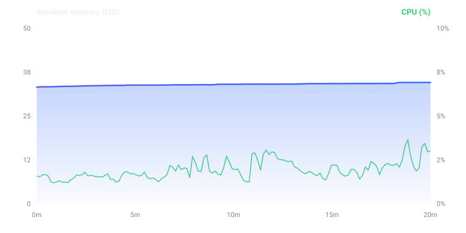
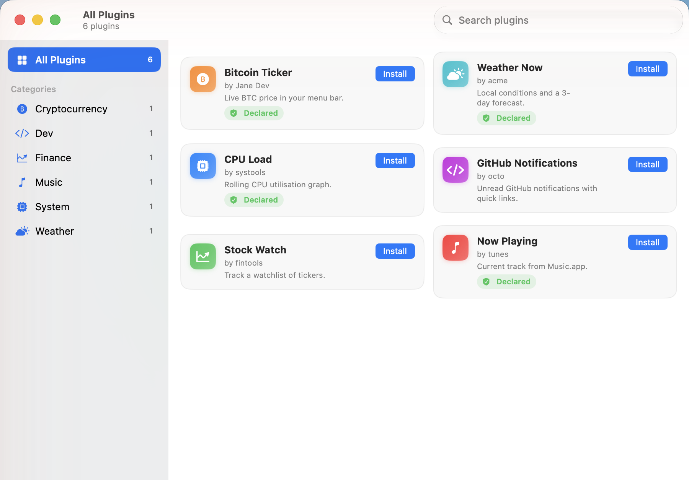
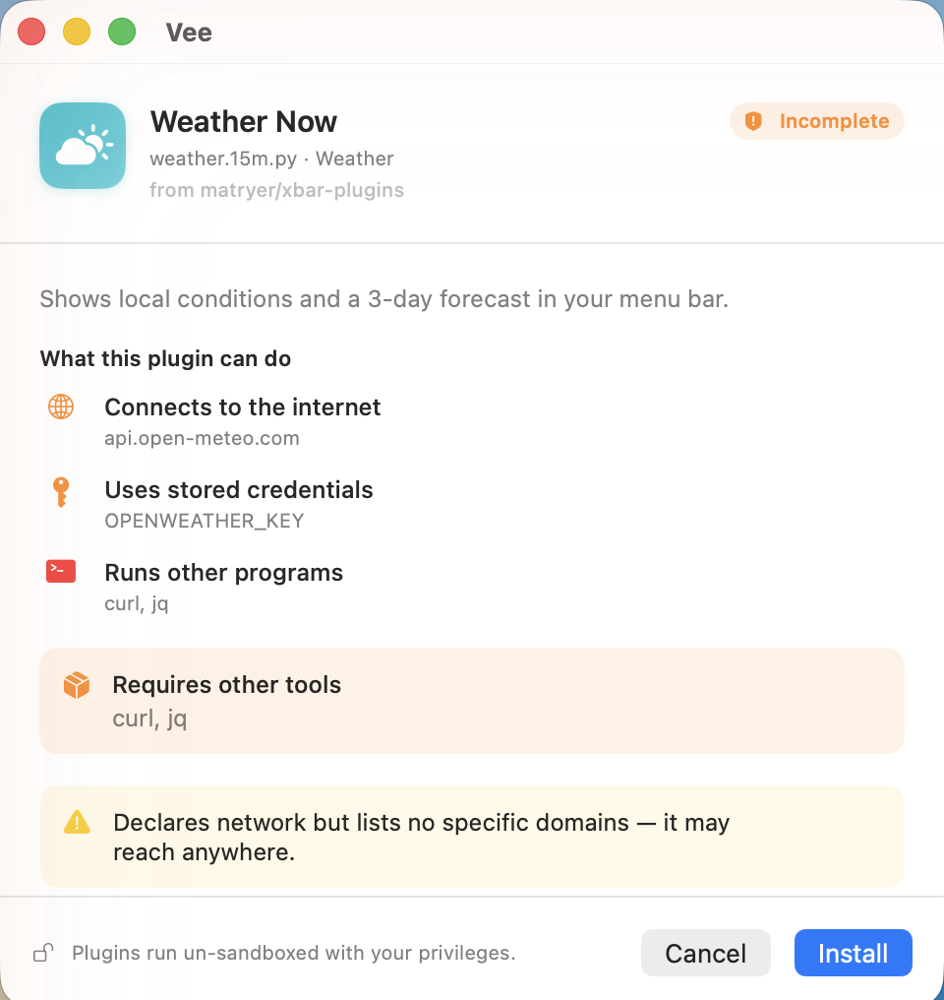
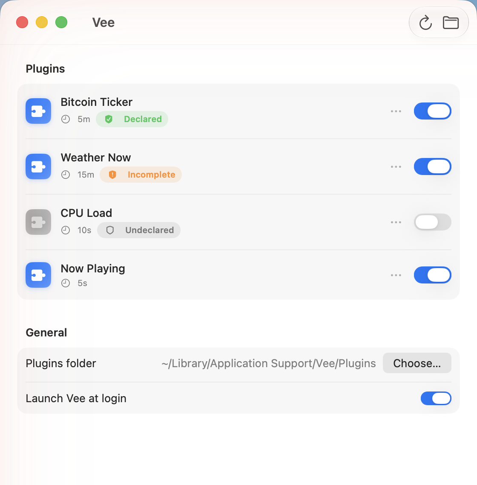
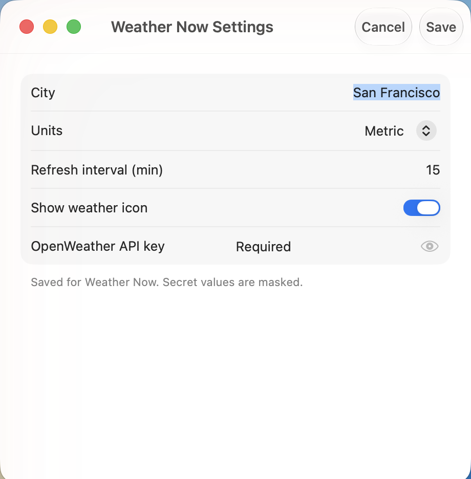

Native macOS menu-bar script runner
Every xbar plugin.
None of the memory leaks.
A native macOS app that turns any script into a live menu-bar widget — and tells you what each one touches before you install it.
macOS 26+ Apple Silicon Notarized Open source
Drop-in for everything you already have
Runs everything you already have
Vee implements a superset of the xbar and SwiftBar protocols. Point it at your existing plugins folder — nothing to rewrite, re-tag, or port.
--- / -- menus
| line params
<xbar.*> & <swiftbar.*> headers
SF Symbols
ANSI color
Inline Markdown
Streaming ~~~
Cron schedules
Native and leak-free
Pure Swift 6.2 / SwiftUI + AppKit with zero third-party dependencies. No embedded WebView in the menu; subprocess output is drained incrementally and runaway processes are timed out and killed — so it stays light for days.
Zero-migration compatibility
The full xbar/SwiftBar protocol works on day one — filenames, submenus, params, metadata headers, SF Symbols, ANSI, Markdown, streaming and cron. Vee even injects the same XBARDarkMode, SWIFTBAR_* and OS_* variables.
Trust at install
Plugins declare what they touch — network, files, secrets, external binaries — and Vee shows a plain-language summary before you install. Transparency, not a sandbox. The one thing no other runner does.
Discover & install
A built-in browser over the shared matryer/xbar-plugins catalog, with trust chips and one-click install through the trust gate. Find a plugin, see its footprint, install it.
Searchable filter panel
Opt in with <vee.filter>true</vee.filter> and a plugin’s dropdown gains a Spotlight-like search (⌘F) that fuzzy-filters every item — even those nested in submenus — flattened into one ranked, breadcrumb-tagged list. Add <vee.shortcut> for a global hotkey from anywhere. Neither xbar nor SwiftBar does this.
Config belongs to the plugin
<xbar.var> declarations become an auto-generated settings form. Secret fields are masked and stored in the macOS Keychain — the app never hardcodes a service name or credential.
Real SDKs for authors
Optional, typed, zero-dependency SDKs in TypeScript, Python, and Go with Menu/Section builders and typed rich-param helpers. A golden-fixture drift guard, shared across all three, keeps them in lockstep with the Swift parser.
The standout — uncontested
See what it touches, before you run it
Every runner in this category executes plugins un-sandboxed — it’s inherent to the idea. The honest question isn’t “is it isolated?” but “do you know what you’re running?”
Vee is the only one that makes plugins declare their reach with <vee.*> tags, then translates those declarations into a plain-language trust summary at install and trust badges in the Plugin Manager.
- Plain language. “Connects to the internet → api.github.com,” not a permission dump.
- Severity at a glance. Green, amber and red badges flag wildcards, broad writes, and undeclared footprints.
- Advisory, never enforced. It’s honest about the trade-off — read the source of anything you don’t trust.
Every plugin is code you chose to run. Vee just makes sure you knew what you were choosing.
The reliability moat — measured, not asserted
It doesn’t leak, and it doesn’t stop
The two loudest complaints against every runner in this category are plugins that silently stop refreshing after long uptime, and memory that creeps until you relaunch. Vee ships a public, reproducible soak benchmark that drives the real execution → refresh pipeline nonstop — and this is what it records.
(10 / sec, continuous)

VEE_SOAK=1; runs nightly in CI on macos-26.
See the benchmark →
Discover
A catalog, one click, through the trust gate
Browse the shared matryer/xbar-plugins catalog right inside the app. Every entry carries a trust chip, and install always passes through the trust summary first.
- Thousands of existing community plugins, searchable by category.
- Trust chips surface each plugin’s declared footprint up front.
- Manage everything from the Plugin Manager — enable, disable, per-plugin settings, reveal in Finder.
Shows a live BTC/USD ticker in your menu bar with a 24-hour sparkline and quick links to your exchange.
A closer look
The real app
The redesigned Liquid Glass UI — Discover, the install trust sheet, the Plugin Manager, and auto-generated settings. Actual captures, not mockups.




<xbar.var>; secrets masked in the Keychain.For plugin authors
Typed builders, zero build step
Prefer code to hand-formatting text? Vee's SDKs — in TypeScript, Python, and Go — give you Menu and Section builders plus typed rich-param helpers. Drop a file in and go.
#!/usr/bin/env node
import { Menu } from "./src/vee.ts";
const menu = new Menu();
menu.title("CPU 12%", { color: "green", sfimage: "cpu" });
const d = menu.dropdown;
d.item("Top processes", { href: "https://example.com/procs" });
d.separator();
const details = d.submenu("Details");
details.item("Load: 1.20");
details.item("Cores: 8");
d.item("Refresh", { refresh: true });
menu.print();
Coming from xbar or SwiftBar?
Honest, side-by-side comparisons
No disparagement — SwiftBar is the native, mature category leader. Here’s exactly where Vee is different, and when each one is the right pick.
Free & open source
Put your scripts in the menu bar.
Know what they touch.
Notarized, signed, and open source. v0.1.x — early, and better with your feedback.
macOS 26+ Apple Silicon brew install --cask vee